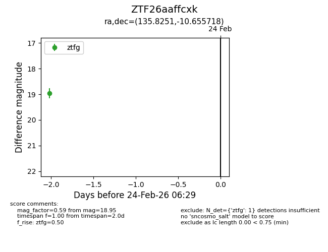
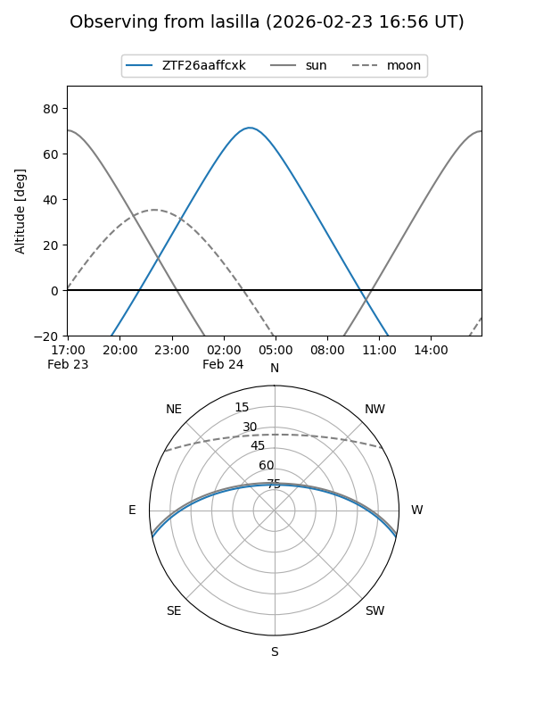
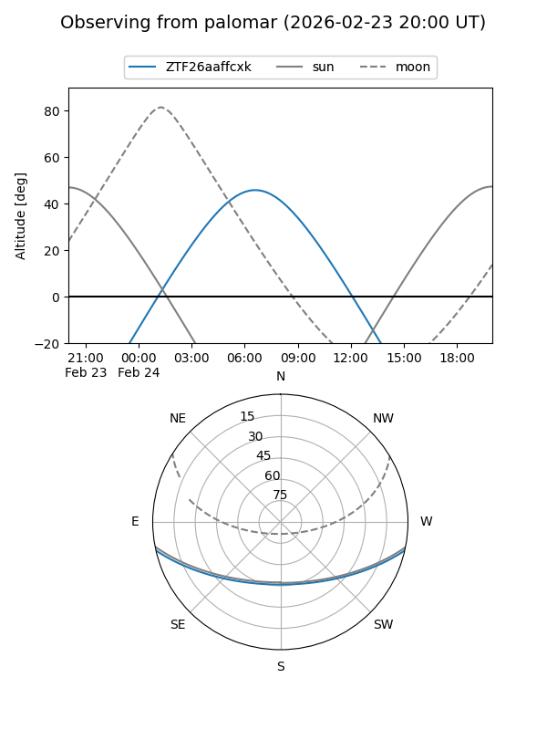

ZTF26aaffcxk
Target ZTF26aaffcxk at 2026-02-24 09:08
Aliases and brokers:
FINK: link
Lasair: link
ALeRCE: link
alt names
ZTF26aaffcxk (ztf,fink_ztf)
Coordinates:
equatorial (ra, dec) = 135.8251,-10.65572
equatorial (HMS+DMS) = 09:03:18.03,-10:39:20.58
galactic (l, b) = (239.2819,+23.05466)
Flags:
Photometry:
last ztfg=18.95
1 ztfg detections
Lightcurve

Visibility


Additional plots